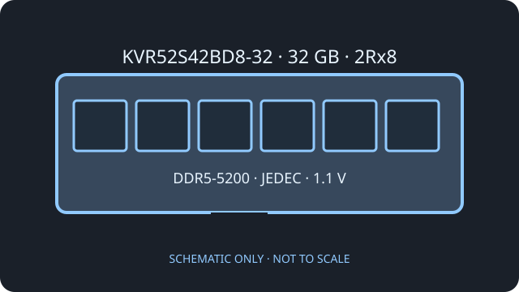

[ KINGSTON VALUERAM // DDR5 MEMORY ]
Kingston ValueRAM KVR52S42BD8-32
An individual 32 GB DDR5 laptop module organized as two x8 ranks. Kingston documents the exact rank and JEDEC profile for this SKU.

Model specifications
| Exact part / capacity | Kingston ValueRAM KVR52S42BD8-32; 32 GB |
|---|---|
| Form factor / rank | 262-pin DDR5 SO-DIMM; dual rank, 2Rx8 |
| Speed / profile | DDR5-5200 (PC5-5200), JEDEC timing 42-42-42 (CL42). SPD is programmed for this JEDEC profile; no XMP or EXPO profile is specified. |
| Voltage | 1.1 V operating module voltage |
| ECC / buffering | Non-ECC, unbuffered client module. DDR5 on-die ECC is present in the memory devices; it is not system-level ECC. |
Compatibility guidance
- Requires a 262-pin DDR5 SO-DIMM socket; it is not a DDR4 or desktop DIMM replacement.
- Check that the CPU, notebook board, and firmware support a 32 GB module, two ranks, and the DRAM density used. Maximum capacity and ranks per slot are system-specific.
- The module uses JEDEC SPD timing at 5200 MT/s, with no XMP/EXPO profile specified. The host may operate it at a lower supported rate.
- Follow the laptop service manual for slot population and replacement. ESD precautions and battery/power isolation are required.
Manufacturer sources
- Kingston — KVR52S42BD8-32 datasheetExact module capacity, rank, JEDEC timings, and voltage.
- Kingston — official product search for KVR52S42BD8-32Manufacturer product and memory compatibility lookup.